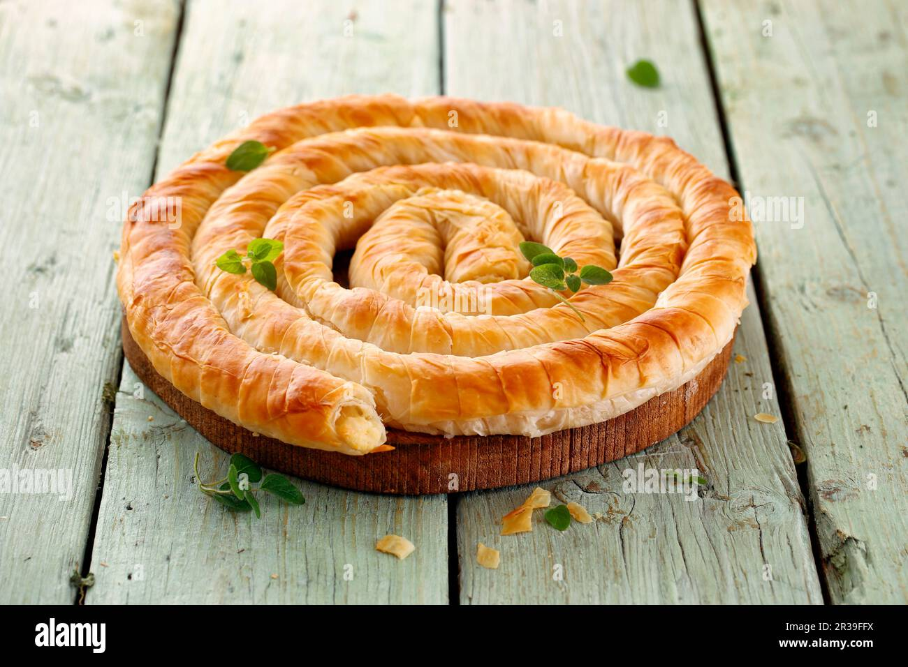

Banitsa Recipe
Back to Homepage

Description
Banitsa is a traditional Bulgarian pastry made of layered filo dough filled
with whisked eggs and white cheese. Crispy on the outside and soft on the
inside, it is enjoyed warm for breakfast or as a snack, and is a staple of
Bulgarian home cooking.
Ingredients
- 1 package of filo dough
- 250g white cheese
- 4 eggs
- 100ml milk
- 2 tablespoons sugar
- 1 teaspoon vanilla extract
Steps
- Preheat the oven to 180°C (350°F).
- In a bowl, whisk together the eggs, milk, sugar, and vanilla extract.
- Grease a baking dish and layer half of the filo sheets, brushing each sheet with melted butter.
- Spread the cheese mixture evenly over the layered filo sheets.
- Layer the remaining filo sheets on top, again brushing each sheet with melted butter.
- Pour the egg mixture over the top and bake for 30-40 minutes, or until golden brown.
- Remove from the oven and let it cool slightly before serving. Enjoy your homemade Banitsa!